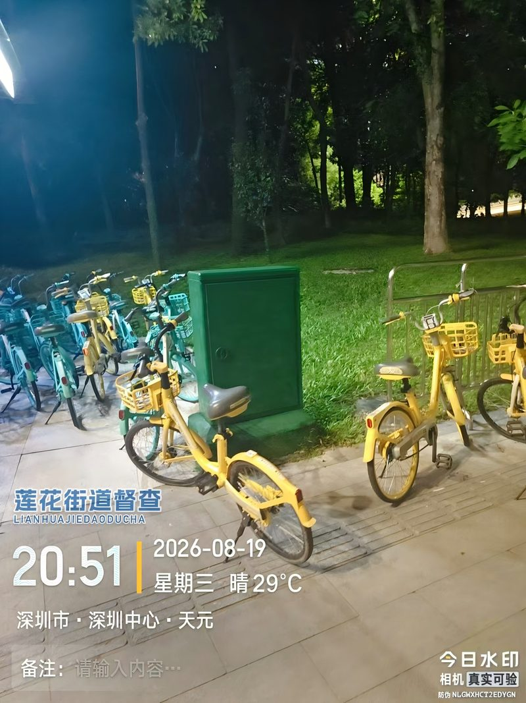
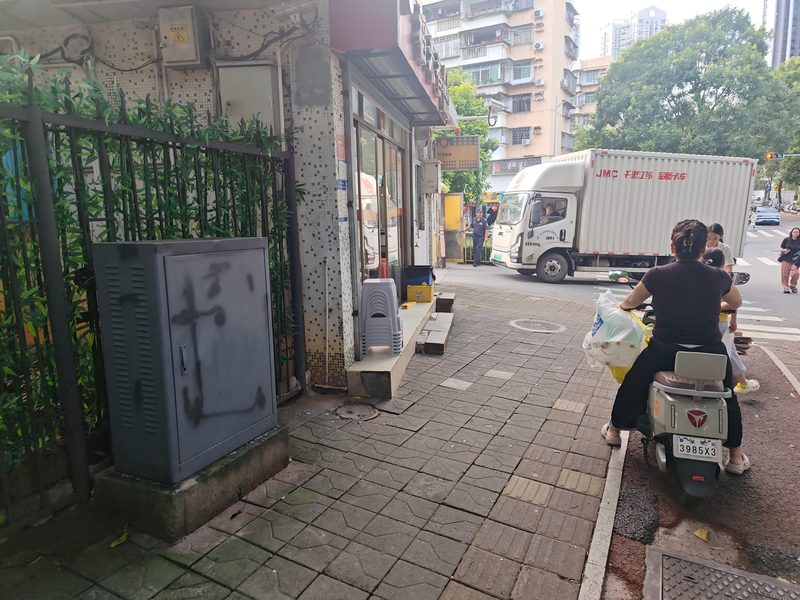

1判定标准
- 1位于绿化带与人行道边缘
- 2占道不明显
- 3不影响通行
- 4无安全隐患
✎
三个条件同时满足，方可判为第二类。若已明显占道或存在隐患，应上调为第一类。
2核心原则
A纳入后续整改批次不立即整改，编入后续计划
B暂存期间落实巡查迁移前保持动态监管，防止占道加剧
C待条件具备再实施待地块开发、道路改造具备条件时迁移
⏱
触发时机：地块开发 · 道路改造 · 其他具备迁移条件。时机出现且具备条件时即启动迁移。
3具体情形与示例
本类含建议迁移与暂缓迁移两种情形，标准一致、按条件成熟度先后处置。典型现场（点击放大）：



4违规与处罚依据
违规依据
禁止占用城市道路设置设施（经批准或按规划设置除外）。
·《深圳经济特区市容和环境卫生管理条例》第 21 条
·《深圳市城市道路管理办法》第 22 条：禁止擅自占用城市道路
·《深圳经济特区市容和环境卫生管理条例》第 21 条
·《深圳市城市道路管理办法》第 22 条：禁止擅自占用城市道路
处罚依据
责令改正，按每处设施处 5000 元以上 2 万元以下 罚款（依法应由交通运输部门查处的除外）。
·《市容和环境卫生管理条例》第 21 条
由道路主管部门强制拆除违法设施，可按每处处 5000 元以上 1 万元以下 罚款。
·《深圳市城市道路管理办法》第 47 条
·《市容和环境卫生管理条例》第 21 条
由道路主管部门强制拆除违法设施，可按每处处 5000 元以上 1 万元以下 罚款。
·《深圳市城市道路管理办法》第 47 条
审批依据
占用城市道路设置市政设施，应征得市或区道路主管部门和规划主管部门同意。
·《深圳市城市道路管理办法》第 27 条
·《深圳市城市道路管理办法》第 27 条
执法主体
市交通运输部门、公安机关交通管理部门；道路主管部门。
ℹ
本类暂不立即整改，以上条文供执法与告知权属单位参考；具体处罚由对应主管部门依职权决定。
第二类 · 后续迁移
福田区占道箱体整治工作 · 分级分类指引